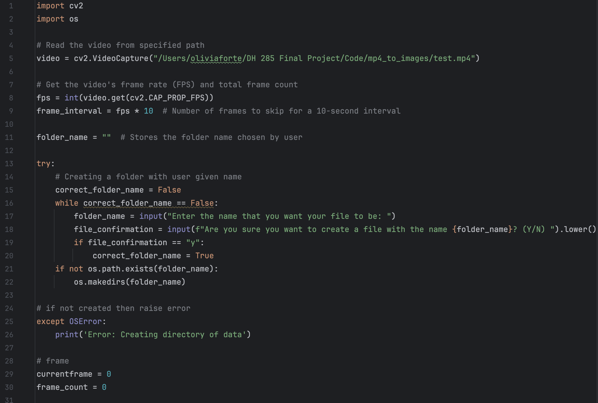
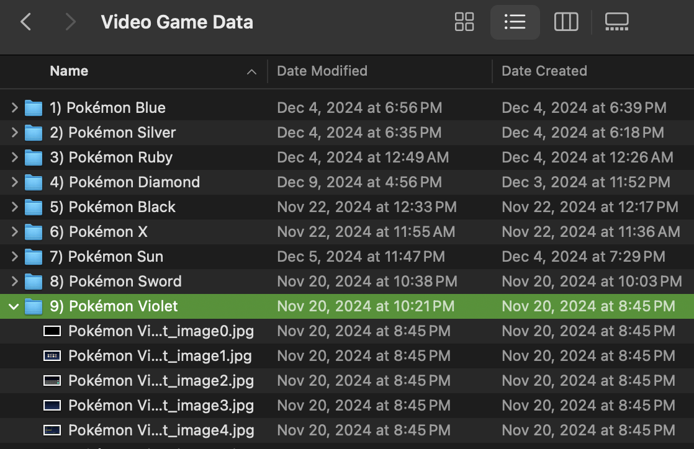
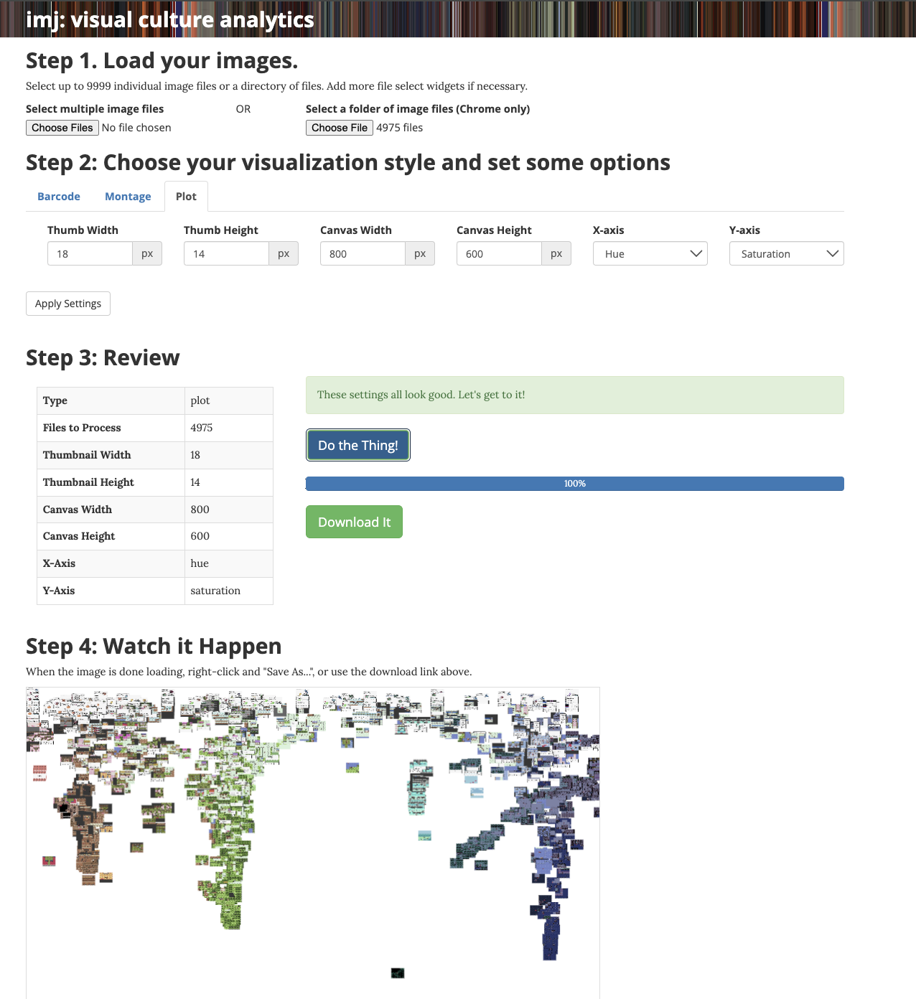

Methods

The first step in my process was narrowing down the scope of my project. Originally, I wanted to analyze the color differences between the top grossing games throughout time, however the scope of that for this project was too large. Additionally, differences in genres and styles would result in inconsistent results, which is why I decided to just look at the mainline Pokémon games. Once I narrowed down my scope to the 9 main Pokémon games, I began to collect the data.
I started by searching YouTube to find video playthroughs for the full games. Once I found the videos, I downloaded them using 4k Video Downloader + as mp4 files. I also downloaded the videos at 720p resolution so that the files weren't too big.
Once all of the videos were downloaded, I broke each mp4 file into individual images using python code. (More details about my code are in my GitHub repository linked on the data page) When you run the program, it asks the user for a file name, and then creates a folder with that file name where all of the images are stored.
The program adds an image to the folder for every 10 seconds of video. I decided to go this route because the playthroughs I analyzed are long and at 30fps, this was too many photos. For example, one of my first tests had over 1.5 million images, which was obviously a bit much for this project. I also chose to do every 10 seconds since 30 frames every second would be redundant and wouldn’t really change the data that much. Each image also has a name with the scheme “Folder Name_image#” to make them easy to understand.
After all of the folders were downloaded, I put them all together in a folder, and they were ready to be analyzed.
The first way I decided to do this is by using IMJ tool. To find the patterns in the evolution of color in the games over time, I used the plot feature to plot each image comparing the hue on the x-axis, and the saturation on the y-axis.
